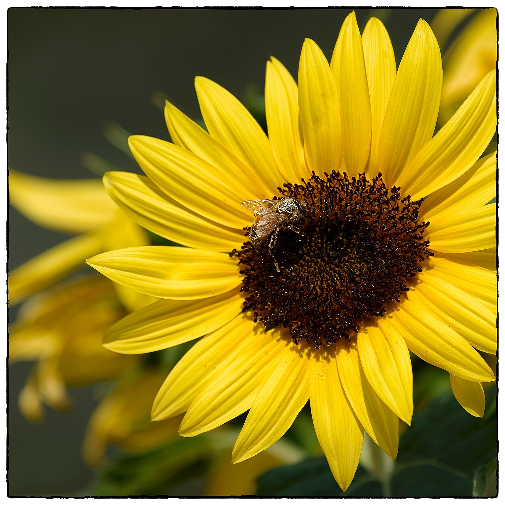

生态系统的信息传递
本期导读
物理信息 · 化学信息 · 行为信息

视频原话 · 导读3 句
- 同学们好！这节课梳理人教版选择性必修二第三章第四节——生态系统的信息传递。8.4s
- 高考常考信息种类的判断、信息传递作用的辨析，以及信息传递在农业生产中的应用。8.3s
- 我们按六个考点梳理，每个考点都讲清楚怎么考、怎么做。5.5s
信息的种类01#
物理信息
通过物理过程传递
例：光、声、温度、湿度、磁场
化学信息
生物产生的化学物质
例：生物碱、有机酸、性外激素
行为信息
动物的特殊行为
例：蜜蜂跳舞、孔雀开屏
考法
物理信息可来自非生物环境或生物；化学信息、行为信息都来自生物
视频原话5 句
- 考点一，信息的种类。生态系统中的信息分为三类。5.8s
- 物理信息：光、声、温度、湿度、磁场等，通过物理过程传递的信息。它可以来自非生物环境，也可以来自生物。11.2s
- 化学信息：生物在生命活动中产生的、可以传递信息的化学物质，比如植物的生物碱、有机酸，动物的性外激素。10.7s
- 行为信息：动物的特殊行为，对于同种或异种生物也能够传递某种信息，比如蜜蜂跳舞、孔雀开屏。9.8s
- 考法：给出实例判断信息种类。物理信息可以来自非生物环境，化学信息和行为信息都来自生物。10.2s
信息种类的判断02#
| 实例 | 载体 | 信息种类 |
|---|---|---|
| 萤火虫发光、蝙蝠回声定位 | 光、声 | 物理信息 |
| 雄鸟鸣叫 | 声 | 物理信息 |
| 狗用尿液标记领地 | 化学物质 | 化学信息 |
| 昆虫释放性外激素 | 化学物质 | 化学信息 |
| 蜜蜂跳圆圈舞、摆尾舞 | 动作 | 行为信息 |
| 雄鸟求偶时的炫耀动作 | 动作 | 行为信息 |
易错
同一只雄鸟：鸣叫是物理信息，炫耀动作是行为信息——不看生物，看载体
试一试：先看传递信息的载体是什么，再判断信息种类。
- 1候鸟迁徙时依靠地磁场定向物理信息：磁场属于物理因素，通过物理过程传递。
- 2蚂蚁分泌信息素，在巢穴和食物之间标出路线化学信息：信息素是生物产生的化学物质。
- 3招潮蟹挥动巨大的螯足求偶行为信息：载体是动物的特殊动作，不是声音或化学物质。
- 4菊花在秋季日照变短后才开花物理信息：光照时长属于物理因素；植物同样可以接收物理信息。
视频原话5 句
- 考点二，信息种类的判断。关键看传递信息的载体是什么。6.1s
- 萤火虫发光、蝙蝠的回声定位、雄鸟的鸣叫，载体是光和声，都是物理信息。7.5s
- 狗用尿液标记领地、昆虫的性外激素，载体是化学物质，都是化学信息。7.1s
- 蜜蜂跳圆圈舞或摆尾舞、雄鸟求偶时的炫耀动作，载体是动作，都是行为信息。7.9s
- 易错：同一只雄鸟，鸣叫是物理信息，炫耀动作是行为信息。不要看生物，要看载体。8.8s
信息传递的过程03#
三要素缺一不可
易错
非生物环境可作信息源，但不能接收信息 → 生物与非生物环境之间的信息传递是单向的
视频原话4 句
- 考点三，信息传递的过程。需要三个要素。4.9s
- 信息源：信息产生的部位；信道：信息传播的媒介，比如空气、水；信息受体：信息接收的生物或部位。10.5s
- 生物与生物之间的信息传递往往是双向的，比如捕食者和被捕食者之间。7.1s
- 易错：非生物环境可以作为信息源，比如光照；但它不能接收信息，所以生物与非生物环境之间的信息传递是单向的。11.2s
信息传递的作用04#
生命活动的正常进行
莴苣种子需特定波长的光才萌发；蝙蝠回声定位
生物种群的繁衍
植物开花需要光信息刺激；昆虫靠性外激素吸引异性
调节生物的种间关系
狼循兔的气味追捕，兔凭狼的气味躲避 → 维持生态系统稳定
解题方法
看作用对象：个体自身 → 生命活动；同种异性 → 种群繁衍；不同物种 → 调节种间关系
视频原话5 句
- 考点四，信息传递的作用，有三条。3.9s
- 第一，生命活动的正常进行离不开信息的作用。比如莴苣种子必须接受某种波长的光信息才能萌发，蝙蝠靠回声定位捕食和飞行。12.9s
- 第二，生物种群的繁衍离不开信息的传递。比如植物开花需要光信息的刺激，昆虫靠性外激素吸引异性。10.4s
- 第三，信息能够调节生物的种间关系，进而维持生态系统的平衡与稳定。比如狼根据兔留下的气味去追捕，兔也能根据狼的气味躲避。12.9s
- 解题方法：看信息作用于谁。作用于个体自身，是生命活动正常进行；涉及同种异性，是种群繁衍；涉及不同物种，是调节种间关系。13.7s
在农业生产中的应用05#
提高农畜产品产量
· 模拟动物信息吸引传粉动物 → 提高结实率
· 延长光照 → 提高家禽产蛋率
控制有害动物
· 性引诱剂诱捕害虫
· 干扰交配 → 出生率降低
易错
利用信息素防治害虫属于生物防治，不是化学防治；对环境无污染
性引诱剂是害虫自身分泌的化学信息素，用生物自身产生的物质防治害虫
性引诱剂是害虫自身分泌的化学信息素，用生物自身产生的物质防治害虫
视频原话4 句
- 考点五，信息传递在农业生产中的应用。第一，提高农畜产品的产量。7.2s
- 比如用模拟的动物信息吸引大量传粉动物，提高果树的传粉率和结实率；延长光照时间，提高家禽的产蛋率。10.6s
- 第二，对有害动物进行控制。比如用人工合成的性引诱剂诱捕害虫，或者干扰害虫交配，降低出生率。10.3s
- 易错：利用信息素防治害虫属于生物防治，不是化学防治。生物防治对人类生存环境无污染。9.6s
三大功能的比较06#
| 比较项目 | 能量流动 | 物质循环 | 信息传递 |
|---|---|---|---|
| 范围 | 食物链、食物网 | 生物圈 | 生物与生物、生物与环境 |
| 特点 | 单向流动、逐级递减 | 循环往复、全球性 | 往往是双向的 |
考法
三者把各组分联系成统一整体；信息传递决定能量流动和物质循环的方向和状态
视频原话4 句
- 考点六，生态系统三大功能的比较：能量流动、物质循环和信息传递。7.3s
- 范围：能量流动沿食物链和食物网；物质循环在生物圈；信息传递在生物与生物、生物与环境之间。10.0s
- 特点：能量单向流动、逐级递减；物质循环往复、全球性；信息传递往往是双向的。8.9s
- 考法：三者把生态系统的各个组分联系成一个统一的整体；信息传递决定着能量流动和物质循环的方向和状态。10.6s
易错速查✓
先自己判断，再点按钮查看对错与解析。
- 1蜜蜂跳舞属于物理信息说法错误：属于行为信息
- 2萤火虫发光属于物理信息说法正确。
- 3信息只能在生物与生物之间传递说法错误：也可来自非生物环境
- 4用性引诱剂诱杀害虫属于化学防治说法错误：属于生物防治
- 5信息传递能调节生物的种间关系说法正确。
- 6生物之间的信息传递往往是双向的说法正确。
看载体定种类，看对象定作用！
视频原话 · 易错速查5 句
- 最后，用六道判断题检验一下。3.6s
- 判断一：蜜蜂跳舞属于物理信息？错，属于行为信息。判断二：萤火虫发光属于物理信息？对。10.8s
- 判断三：信息只能在生物与生物之间传递？错，也可来自非生物环境。判断四：用性引诱剂诱杀害虫属于化学防治？错，属于生物防治。14.7s
- 判断五：信息传递能调节生物的种间关系？对。判断六：生物之间的信息传递往往是双向的？对。10.9s
- 六个考点串成一条线：看载体定种类，看对象定作用。我们下期再见！7.1s
图片来源
图片来源：Wikimedia Commons —— Mustang Joe《Honeybee on sunflower》CC0
Photo: Mustang Joe, CC0